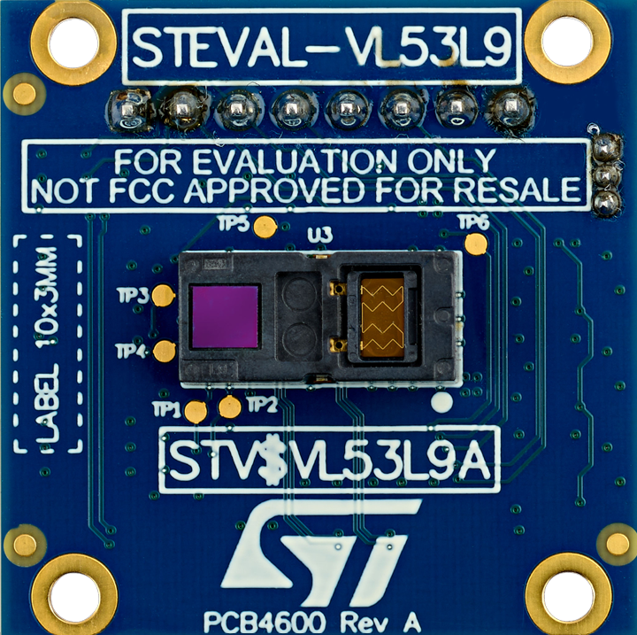

Integrated LiDAR
Investigating depth measurements and environmental information available through the iPhone's integrated LiDAR hardware.
MASTER'S ENGINEERING PROJECT · SORBONNE UNIVERSITÉ · PING
Investigating the development of an intelligent indoor navigation system designed to support visually impaired individuals in navigating complex indoor environments independently and safely. The project explores the integration of LiDAR, inertial measurements and camera-based perception through two complementary development approaches: a smartphone-integrated sensing architecture and a smartphone-independent external sensing platform.

ASSISTIVE ROBOTICS · MULTISENSOR PERCEPTION
The project investigates how environmental sensing, inertial measurements and localization algorithms can be combined to provide spatial awareness and navigation assistance in indoor environments where conventional GPS positioning is unavailable or unreliable.
A central engineering objective is to explore both the use of sensing capabilities already available in modern smartphones and the development of an independent external sensing platform.
Visually impaired individuals can face significant difficulties when navigating indoor environments such as university buildings, corridors, intersections and stairways.
Conventional navigation applications primarily rely on outdoor positioning technologies, which become limited or unavailable inside buildings. This creates a need for alternative approaches capable of interpreting nearby surroundings and estimating the user's position indoors.
The project investigates an accessible and portable navigation solution combining environmental perception, inertial sensing, localization and intelligent directional guidance.
The project is organized around two complementary development approaches addressing the same indoor-navigation challenge.
The first investigates the use of sensing capabilities integrated into an iPhone, with emphasis on software development and multisensor data processing. The second investigates a dedicated external sensing platform intended to operate independently of a specific smartphone model.
Both approaches aim to support environmental perception, localization and navigation, while their technical feasibility and implementation requirements continue to be evaluated.
Data acquisition · Calibration · Visual / inertial / LiDAR integration · SLAM investigation · Indoor localization
Hardware integration · Sensor interfacing · Power management · Processing architecture · Wireless communication
Environmental perception · SLAM · Indoor localization · Obstacle awareness · Navigation guidance
Conceptual architecture based on the current project direction. Final component selection and implementation remain subject to feasibility.
The first development track investigates the use of sensing capabilities integrated into an iPhone, combining its LiDAR sensor, inertial measurement unit and camera.
Unlike the external-hardware approach, this track is primarily focused on software development, sensor-data acquisition, processing and the investigation of multisensor localization techniques.
The objective is to study how the available smartphone sensing modalities can be coordinated to support indoor environmental perception and navigation.
Investigating depth measurements and environmental information available through the iPhone's integrated LiDAR hardware.
Exploring smartphone inertial measurements to support motion estimation and localization.
Investigating the use of visual information alongside LiDAR and inertial data for multisensor perception.
Studying the spatial and temporal relationships between camera, LiDAR and inertial measurements.
Exploring methods for combining visual, inertial and depth information to support more reliable perception.
Investigating algorithms for simultaneous environmental mapping and indoor position estimation.
Exploring how processed environmental and localization information can be translated into navigation guidance.
The second development track investigates a dedicated external sensing platform designed to communicate with different smartphones rather than relying on a specific phone's integrated LiDAR hardware.
This approach represents a broader hardware and mechatronics challenge, involving the selection and integration of sensing components, embedded electronics, power management, mechanical packaging and wireless communication.
The team is investigating the technical requirements and potential advantages of this independent architecture. Its final configuration remains subject to component evaluation and engineering feasibility.
STMicroelectronics STEVAL-VL53L9 evaluation board based on the VL53L9CX sensor.
The selected LiDAR evaluation board provides a hardware starting point for investigating external depth sensing and its integration into the proposed sensing platform.
Its compatibility with different host platforms provides flexibility for development and evaluation.
Integration of the selected STEVAL-VL53L9 evaluation board for external environmental sensing.
Evaluation of inertial sensing options. The MPU-6050 is currently a candidate, not a finalized selection.
Investigating camera requirements, interfaces and potential benefits for the external sensing architecture.
Considering processing, sensor interfacing, communication and hardware integration requirements.
Investigating battery-powered operation and the electrical requirements of a portable sensing unit.
Exploring wireless Bluetooth communication between the external sensing unit and smartphone applications.
The selected STEVAL-VL53L9 is an evaluation board based on the VL53L9CX direct Time-of-Flight 3D LiDAR module developed by STMicroelectronics.
The sensor provides spatial depth information through a high-resolution multizone sensing architecture, making it a relevant component for investigating indoor environmental perception.
Approximately 2.3K sensing zones.
Specified ranging distance according to the manufacturer's data brief.
Specified diagonal field of view.
Across a specified 55° × 42° field of view.
Direct Time-of-Flight 3D LiDAR sensing.
MIPI and I3C interfaces, with additional header connections.
The evaluation board supports integration with compatible development platforms, including STM32 platforms, Raspberry Pi and Rockchip. The manufacturer's documentation also describes a camera flex connector for MIPI-based interfacing.
These hardware characteristics provide a starting point for evaluating the sensor's suitability for the external navigation architecture.
Source: STMicroelectronics, STEVAL-VL53L9 Data Brief, DB5805, Revision 2, April 2026, page 1.
Camera integration is another important area being investigated across the two development tracks.
Visual information may complement LiDAR depth measurements and inertial motion data, providing additional information for environmental interpretation and localization.
The investigation considers the requirements associated with combining measurements from different sensing modalities, including calibration, synchronization and coordinate-frame relationships.
Evaluating how visual information and depth measurements can complement each other during environmental perception.
Investigating the use of IMU measurements for motion estimation and their contribution to localization.
Studying the spatial and temporal relationships between sensing components.
Exploring approaches combining visual, inertial and LiDAR information for mapping and localization.
Beyond environmental perception and localization, the project investigates how navigation information can be communicated to visually impaired users in an intuitive and accessible manner.
The feedback mechanism has not yet been finalized. Different approaches are being investigated to determine which interaction method offers the best balance between usability, comfort, portability and technical feasibility.
Investigating wearable vibration-based feedback patterns for communicating directional navigation cues.
Exploring the possibility of developing a custom mechanical enclosure for a wearable feedback interface.
Investigating controlled pressure-based interaction concepts for communicating navigation instructions.
Evaluating auditory guidance and the potential combination of different feedback channels.
The final feedback mechanism will depend on ongoing research, user requirements and technical feasibility. Concepts that do not meet the project's requirements may be modified or discarded.
The project involves coordinating several engineering disciplines within a unified navigation architecture. Its development requires evaluating both algorithmic and hardware-related constraints.
Investigating reliable positioning in indoor environments without dependence on conventional GPS.
Coordinating LiDAR, visual and inertial measurements to support consistent spatial perception.
Studying localization and mapping behavior in environments containing moving obstacles and changing conditions.
Considering size, weight, power consumption and comfort for an external sensing device.
Investigating robust communication between external sensing hardware and smartphone software.
Evaluating how spatial information can be converted into clear, understandable guidance.
Contributing as part of a multidisciplinary engineering team, with involvement across system architecture, sensor integration, research and navigation development.
Participating in the development of the two complementary sensing approaches.
Working with the selected external LiDAR evaluation board and investigating its integration requirements.
Investigating suitable sensing components and their potential integration with LiDAR.
Studying available approaches for multisensor mapping and localization.
Participating in the investigation of electronics, power and communication architecture.
Exploring wearable haptic and alternative feedback concepts for assistive navigation.
The project aims to develop and evaluate an indoor navigation solution integrating environmental sensing, localization and accessible human–machine interaction.
Technology tags include selected hardware, integrated smartphone components and research areas currently under investigation.
The project is currently focused on investigating two complementary approaches to multisensor indoor navigation: a software-oriented smartphone-integrated solution and a dedicated external sensing platform.
By exploring LiDAR, IMU and camera integration alongside SLAM, localization and accessible feedback mechanisms, the project addresses both the technical requirements of autonomous environmental perception and the practical needs of human-centered navigation.
The final system architecture, hardware configuration and feedback mechanism will be determined through ongoing research, implementation and feasibility evaluation.